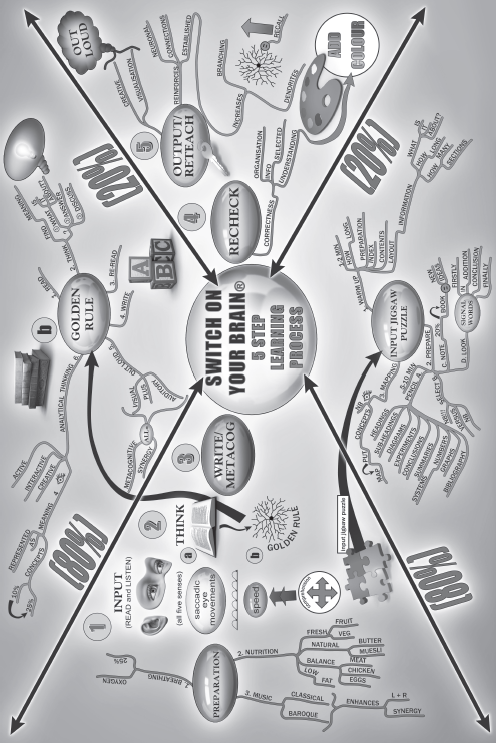
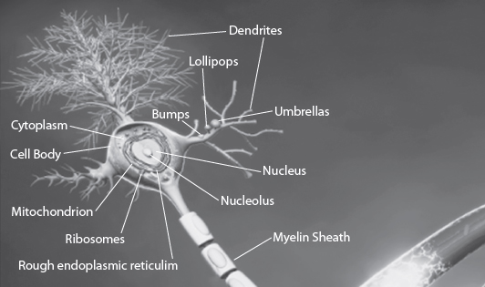

10
How and Why the 21-Day Brain Detox Plan Works
The Switch On Your Brain 21-Day Brain Detox Plan technique is a rigorous, disciplined, daily routine that becomes a lifestyle of renewing your mind. It is a lifestyle of neuroplastically rewiring your nerve networks. It is driven by you, but led by the Holy Spirit. It gets you into a state of deep, intellectual, introspective self-reflection, activating all eight keys I described in part 1.
Your Daily Routine
Once you have worked through this book and mastered the concepts (and take your time with this; it’s worth not rushing through), your daily routine will take seven to ten minutes minimum, although some like to go longer. During this time you will be doing 5 steps, daily, for 21 days. These 5 steps are based on my research on the science of thought and the brain (see chapter 8) and are called the 5-Step Switch On Your Brain Learning Process.
You can do up to seventeen 21-Day Brain Detox Plan cycles per year.[1] Research shows that deep-thinking exercises repeated daily over a period of twenty-one days help create long-lasting change.
Your year can start whenever you want it to, so if you have picked up this book in September, for example, then you simply work through the book during September and then begin your year in October.
Who needs this? Everyone. As you have seen from the eight keys discussed in part 1, no one is exempt from mind issues. From the moment God created us with free will, we entered a realm of creative responsibility for our choices.
It is obviously a highly complex process, but I have simplified the Switch On Your Brain technique sequence into five steps:
You Are Doing Your Own Brain Surgery
Each of these steps activates phenomenal and complex neurophysiology and neurobiology. So in essence, what you will be doing with the 5 steps is bringing the toxic thought into consciousness and then proceeding, over 21 days, to destroy it (see chap. 8). Mind controls matter, as we learned in part 1. At the same time, you will be growing a healthy new thought to replace the toxic one, so you will be consciously and simultaneously building up healthy thoughts and tearing down toxic thoughts. You work on only one thought network each 21-day cycle, breaking down the toxic and simultaneously building up the healthy.

You Can Repeat the Cycle
You may repeat a cycle if you feel you haven’t fully dealt with the issue. Many times we start working through something only to discover the root issue a few days in. That’s fine; just focus in on the root issue for the rest of the 21 days and then redo the cycle. Twenty-one days is just the minimum time needed to build the neural network.[2]
What this means is that it takes repeated updating or rethinking through information in a sequenced way for it to take root and form a stable memory. If this reinforcement does not take place over the 21 days, then the newly found neural network will decay in less than a month. If you don’t use the memory, the proteins it is made from will denature and the memory will disassemble. Wherever there is more thinking activity, there will be more wiring. Whatever you think about the most will grow, because thinking stimulates the genetic expression required to make proteins. Every hour the connections are doubling.[3]
You may also just feel at the end of the cycle that the toxic thought was so dominant or strong that it warrants working on it another 21 days. Sometimes there is a lot of guilt and condemnation or “I can’t” mindsets that can keep you from progressing. These mindsets alone require a 21-day brain detox before the next issue can be tackled.
Pay More Attention to the New, Healthy Memory
This is why it is so important to build up the new healthy memory and pay more attention to it rather than to the toxic memory you are breaking down: Repeated replaying is central to the process of creating durable, long-term memories. And remember, this works in both the negative and positive direction.
As you move through the five steps and into deep, focused reflection, your brain will have moments of insight that are accompanied by bursts of high frequency gamma waves in the brain.[4] These create an ideal mindset for learning and integration across the brain. Neurons have their own rhythmic activity, almost like an internal chatter, and changes in these fluctuations underlie how we perceive things.[5] It is our choice to pay attention that influences this internal chatter in a positive or negative direction. You want as much of this happening over the 21 days as possible because it will enhance your effectiveness. We need to be almost obsessive in our desire to change, to “Be perfect, therefore, as your heavenly Father is perfect” (Matt. 5:48 NIV).
So Many Good Things Are Happening
The brain is always learning how to learn, always changing. As you use the 5-Step Switch On Your Brain Learning Process through the 21 days you are influencing so many good things to happen. Here are just a few. When you think deeply and are learning, BDNF (brain derived neurotrophic factor) is released to consolidate the connections between neurons to enhance recall in the future. This BDNF also promotes increase in the fatty substance called myelin, which insulates the nerves. This is a good thing, because increased myelination means faster thinking and better memory. As you start paying attention and focusing your thinking, BDNF is released, and this in turn increases attention by activating the nucleus basalis. And when the nucleus basalis is turned on, the brain becomes extremely plastic and ready to change, build, and rewire—and therefore, renew.[6]
The Work Doesn’t End at 21 Days
At the end of the 21-day cycle, the toxic thought is gone and the new healthy thought is like a “tiny new plant” that will need nurturing to grow. Our thinking is that nurturing. This means that if you don’t practice using it, it will not be properly automatized (see chap. 8), and it is very possible that your mind will shift back to regrowing that toxic thought.
To avoid this you make a conscious effort to practice using the new thought as much as you can until you reach automatization. Automatization means that particular way of thinking or reacting embedded in the new thought tree has become an automatic part of you; you do it driven by the nonconscious mind, not the conscious mind. So, to make sure that you have automatized the new healthy memory, research shows you will need to consciously practice using it daily for at least two more 21-day cycles, or 63 days total.[7] Please continue to consciously keep practicing using the new habit until you feel comfortable—which can even sometimes take between 84–154 days of consciously using the new healthy thought. The point is that the duration or automatization of the habit formation is likely to differ based on what you are trying to do and, of course, the uniqueness of who you are as a person. As long as you continue doing—which I call an “active reach,” the fifth step that you do each day—consistently in a given situation, the healthy new way of thinking, the healthy “habit,” will form.
Bumps, Lollipops, and Mushrooms
In the brain, automatization physically looks like lots more tree branches that are thick and well established, with many branches interconnecting with other thought networks. And if you could zoom in closely to the connections the branches grow from, you would see little things called spines. These spines change shape, from a bump at around 7 days, to a lollipop shape at around 14 days, to a mushroom shape at around 21 days as the thought becomes stronger. This is because the proteins change progressively by day 21, with peak changes being at 7 and 14 days, to become self-sustaining proteins, which are like a long-term memory. This applies in both the negative and positive direction—this is the concept of the plastic paradox I spoke of earlier. And even a long-term memory can be broken down. If, after wiring out a toxic thought, you have stopped using the healthy new thought and revert back to the toxic thought, you reverse the process you went through in the first place, breaking down the healthy thought and rebuilding the toxic thought. This is why we need to make a choice to be alert, practicing the presence of God by sharpening our conscience and listening to our intuition. This is what creates a lifestyle of renewing the mind.
So at the end of the 21 days, you integrate the new healthy thought into your lifestyle, into your repertoire of reactions to life so that you keep strengthening that reaction. It can take anywhere from three to four 21-day cycles to automatize the new healthy thought pattern and to make sure the toxic thought doesn’t grow back.[8] A lot also depends on the individual, the thought pattern you are detoxing, and the healthy replacement pattern you are building. So for some thoughts it might take one 21-day cycle, and for other thoughts it might take more, as I explained earlier.
A Neuron with Dendrites, Showing Bumps, Lollipops, and Umbrellas

The 21-Day Brain Detox Plan Is a Deliberate Practice
The best way to change, learn, and build memory meaningfully is through deliberate and disciplined practice. This is not mindless repetition. The five steps of the Switch On Your Brain technique in the 21-Day Brain Detox Plan include deliberate, conscious setting of goals, obtaining immediate feedback, and concentrating as much on the process as on the outcome. The 21-Day Brain Detox Plan will work best when you set the challenge just beyond the edge of your comfort zone; a challenge is good for you.[9] We are designed as deeply intelligent beings and our minds and brains respond to and rise up to challenge. In fact, they get better.
You are made from God’s perfectness, but it is up to you to create your expertise in life. God gives us the blueprint, but we need to choose to make it happen.
The point is that you are playing to win and you don’t give up. “I press on toward the goal to win the prize for which God has called me heavenward in Christ Jesus” (Phil. 3:14 NIV). As you go through this process, you will be fulfilling what God calls us to do in Romans 12:2, “renewing” the mind, and in Matthew 5:48, “Be perfect, just as your Father in heaven is perfect.” In the next five chapters I will explain each of the five steps of my Switch On Your Brain technique. It is necessary to get a deep understanding of each of these steps so you use them properly on a daily basis. If you skip a step or only sort of use the step, the changes you create will also be “sort of” and not effective.
You will see questions interspersed in the text—please stop to take a moment to answer the questions because they will help you experience and understand the Switch On Your Brain process much more deeply, and it will make it easier to apply the 21-Day Brain Detox Plan. The questions help you start understanding how to get into the mindset that will increase your chance of success.
Chapter 10 Summary